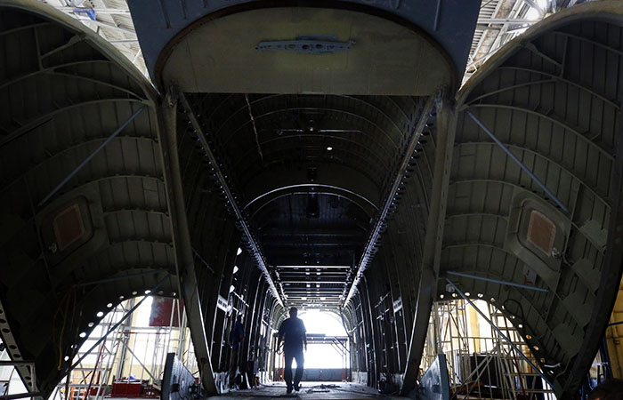

Мир новых технологий

Мир новых технологий
"Сегодня все - кто со злостью, кто с одобрением, понимают и констатируют, что российская армия имеет больше 70 процентов, а если говорить точнее, то почти 71 процент современного вооружения и техники. Это самый высокий процент среди всех армий мира", - сказал Шойгу в среду на встрече с коллективом компании "Роствертол".
МОСКВА, 17 дек – РИА Новости. Новый ракетный комплекс подвижного грунтового базирования разрабатывается в России, заявил командующий Ракетными войсками стратегического назначения (РВСН) Сергей Каракаев.
В настоящий момент самым современным стратегическим мобильным комплексом в РВСН является "Ярс" (РС-24), который также существует в версии стационарного базирования.
МОСКВА, 16 дек — РИА Новости. В России завершились государственные испытания барражирующих боеприпасов "Куб", результат тестов считают положительным. Об этом РИА Новости заявил источник, близкий к Минобороны.
Беспилотники с барражирующими боеприпасами способны долго летать в предполагаемом районе цели в режиме поиска, а обнаружив ее — уничтожить как управляемая ракета "воздух — поверхность" и самоустраниться после выполнения задачи.
МОСКВА, 2 дек — РИА Новости. Российский лазерный комплекс "Пересвет" предназначен прежде всего для вывода из строя спутников, заявил в беседе с "Известиями" военный эксперт Дмитрий Корнев. Он назвал боевой лазер одним из эшелонов противокосмической обороны и отнес его к противоспутниковому оружию с функциональным поражением.
По мнению эксперта, лазер способен поражать и атмосферные летательные аппараты: выжигать аппаратуру самолетов-разведчиков и дронов, а в перспективе — уничтожать их на ближней дистанции.

МОСКВА, 20 ноя - РИА Новости. Самолеты Су-57Э, МиГ-35 и Cheсkmate интересуют страны Азиатско-Тихоокеанского региона (АТР), сообщил РИА Новости генеральный директор "Рособоронэкспорта" Александр Михеев по завершении выставки Dubai Airshow 2021. "Самолеты Су-57Э, МиГ-35 и легкий тактический самолет Cheсkmate разработки входящей в госкорпорацию "Ростех" Объединенной авиастроительной корпорации имеют хорошие перспективы на рынке Азиатско-Тихоокеанского региона (АТР). Более того, уже сейчас мы наблюдаем большой интерес к ним во всем мире", - сказал Михеев.
По его словам, МиГ-35 предлагается на внешний рынок в одно- и двухместном вариантах, находится на вооружении ВКС России, и его производитель готов поставлять самолет по контрактам "Рособоронэкспорта". "По Су-57Э ведем консультации с рядом стратегических партнеров России. Представленный в 2021 году Cheсkmate также вызвал большой интерес в мире, но ему еще предстоит преодолеть путь от прототипа до серийной машины. Эксплуатанты российской авиационной техники из стран Азии внимательно наблюдают за этими машинами, и мы фиксируем такое внимание на каждой выставке как в России, так и за рубежом", - сказал Михеев.
МОСКВА, 20 ноя - РИА Новости. Разрабатываемая в России мобильная система ПРО С-550 сможет сбивать американские космические беспилотные аппараты X-37, способные нести ядерные заряды, сообщили РИА Новости два источника в оборонно-промышленном комплексе. Раннее российской стороной заявлялось, что орбитальные беспилотники X-37 способны нести несколько ядерных боевых блоков на борту и являются ударными системами стратегического назначения, базирующимися в космосе. При этом официально Соединенные Штаты утверждают, что X-37 предназначены только для научных и разведывательных целей. Эти аппараты могут маневрировать в космосе, меняя свою орбиту.
В настоящее время на вооружении России и США имеются специализированные системы ПРО, способные с высокой вероятностью сбивать боевые блоки МБР, но стационарного типа с противоракетами шахтного базирования. Мобильными системами стратегической ПРО с возможностями, заявленными для С-550, не обладает ни одна страна мира. Впервые о системе С-550 сообщил 9 ноября в ходе селекторного совещания министр обороны Сергей Шойгу. Какие-либо сведения о системе не раскрывались.